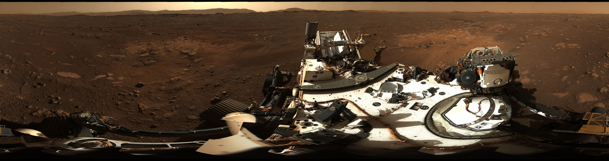
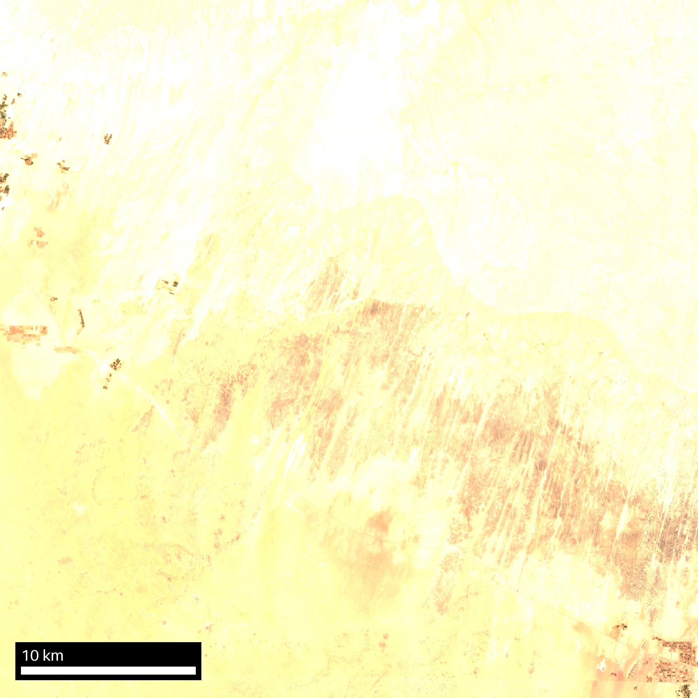
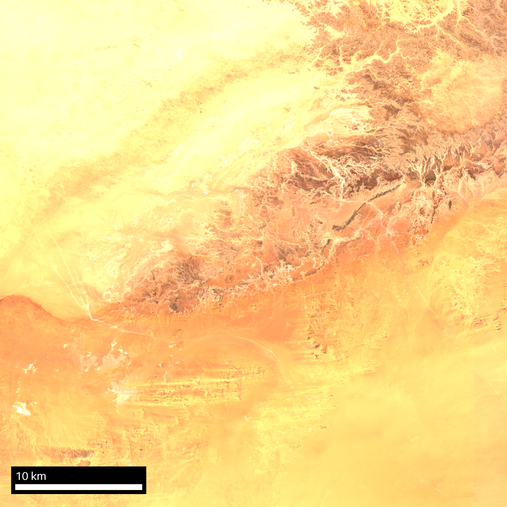

Marte · Vista desde la superficie
Jezero crater (Perseverance)
Surface 360° panorama. Copied from experiments/panorama_360/pia (not re-downloaded). The 640 MB PIA24264_hires.tif (36952x11570) exceeds 60 MB.
Análogos terrestres
-
Nuevo #1 egypt western desert score 0.24925.375, 29.575 · Google Maps · mejor: precipitación · peor: temperatura media

-
Nuevo #2 fezzan libya score 0.24724.375, 14.925 · Google Maps · mejor: pendiente · peor: temperatura media

-
Nuevo #3 taklamakan score 0.19738.675, 84.625 · Google Maps · mejor: pendiente · peor: precipitación

-
Análogo conocido #1 transantarctic mts score 0.228-85.125, 166.925 · Google Maps · mejor: vegetación (NDVI) · peor: precipitación